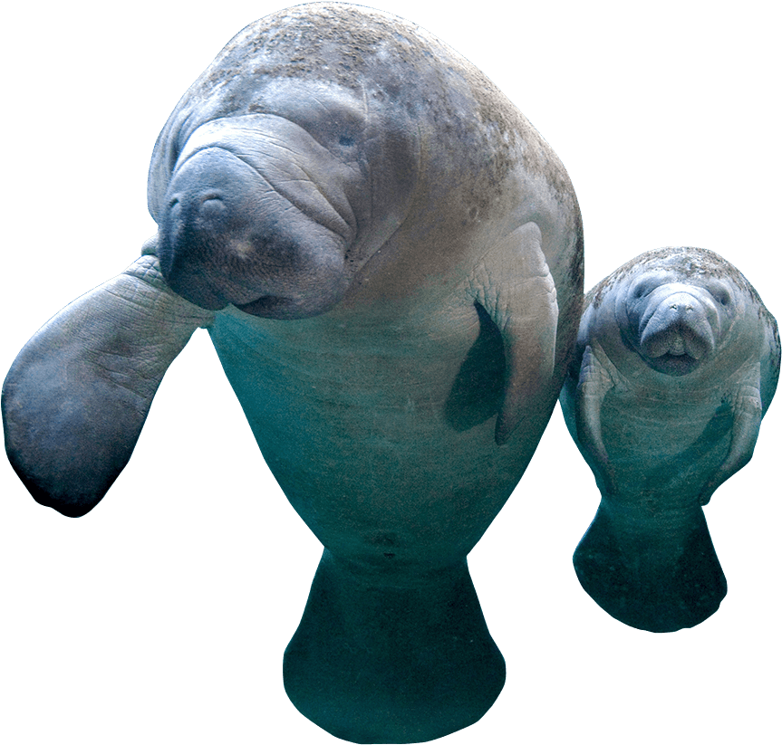
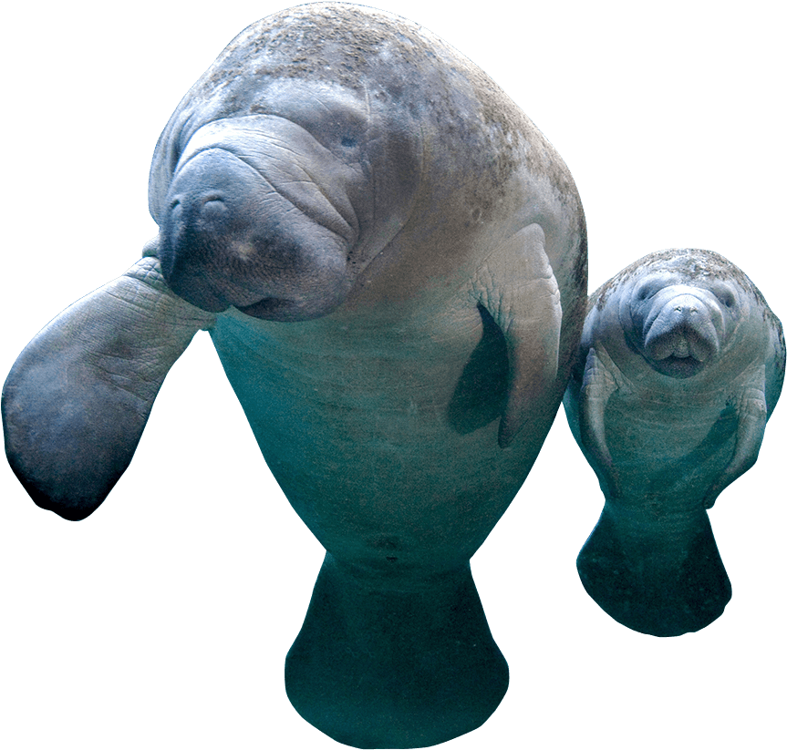

Manatee
Cheloniidae and Dermochelyidae families
The manatee is a large aquatic relative of the elephant.
Manatees are grayish brown in color and have thick, wrinkled skin on which there is often a growth of algae. Their front flippers help them steer, or sometimes crawl, through shallow water. They also have powerful, flat tails that help propel them through the water.
Like other grazing animals, manatees play an important role in influencing plant growth in the shallow rivers, bays, estuaries, canals and coastal waters they call home. Historically, manatees in Florida relied on natural springs to stay warm during cold weather.
Florida has the largest concentration of natural artesian springs in the world; unfortunately, many springs have been altered, degraded and even lost completely due to groundwater pumping for urban and agricultural development, drowned under reservoirs, or blocked by dams. At the same time, we’ve built electric power plants and other structures that produce artificial sources of warm water, and many manatees (over 60% of the population) have learned to rely on these outflows to provide warm water habitat. Whether natural or man-made, manatees depend on warm waters to spend the coldest days of winter.

 

STATUS:
Vulnerable
POPULATION:
13,000
HABITAT:
Open Water, Coasts
THREATS
CLIMATE CHANGE & HUMAN INTERFERENCE
Threats to the Florida manatee encompass catastrophic natural events and anthropogenic factors that could cause declines in reproductive and survival rates or declines in the carrying capacity of the environment. Loss of Warm-water Habitat: Expected changes in the network of warm-water refuges over the next several decades present the most serious long-term threat to manatees in Florida, as noted in the federal Recovery Plan: “one of the greatest threats to the continued existence of the Florida manatee is the stability and longevity of warm-water refuges” (USFWS 2001, p. 28). Ultimately, the discharges from power plants provide unreliable warm-water habitat when viewed over the long term (i.e., next 20 to 100 years) because the once-through cooling technology that creates the large thermal plumes is being replaced by more efficient and alternative cooling technologies (Laist and Reynolds 2005a). Short-term threats to the network of warm-water sites also loom on the immediate horizon. Some aging power plants may be shut down and potential deregulation of the electric utility industry may eliminate or reduce the reliability of warm-water effluents that large numbers of manatees depend on to survive winter cold periods (Rose 1997, U.S. Fish and Wildlife Service 2000). Temporary disruptions in heated effluents during winter have caused changes in local manatee distribution (Packard et al. 1989) and have been implicated in elevated numbers of deaths from cold stress (Campbell and Irvine 1981, Ackerman et al. 1995). The complete elimination of a secondary warm-water refuge in northeastern Florida through diffusion of the heated effluent resulted in a shift in manatee distribution within the area and in substantial mortality of manatees that remained in the region (Deutsch et al. 2000, Laist and Reynolds 2005a). Loss of certain key warm-water sites could result in catastrophic mortality and would likely reduce the environmental carrying capacity for manatees in Florida.
The long-term reliability of artesian springs that provide natural warm-water refuges for manatees is also in doubt because human demand for ground water and loss of recharge areas through development will likely result in diminished spring flows (Reynolds 2000, Laist and Reynolds 2005a). According to the U.S. Census Bureau (2001), Florida’s human population increased by about 23% to 16 million between 1990 and 2000, and projections suggest that the number of people living in Florida will increase by another 10 million people by 2025. In order to meet the increased demand for water that a growth in human population will entail, it is likely that spring flows and water quality will decline, further reducing natural warm-water habitat for manatees. This natural habitat will become even more important in the future as existing industrial sites disappear.

How Can I Help?

Call Your Representatives
100 companies are responsible for 71% of global emissions. Urge your congresspeople to pass legislation preventing corporations from destroying our planet.

Reduce Your Footprint
Commit to reducing food waste, electricity use, and walk, bike, or take public transportation. Buy only what you need and recycle what you no longer do.

Donate
Companies like IUCN Red List & World Wildlife Fund are committed to protecting habitats threatened by Climate Change and the animals that live there.